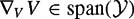
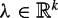
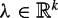

|
| |||||||||||||
|
|
||
This section discusses second-order mechanical control systems in greater depth, leading to simplified controllability tests and ideas that lead to reduced-complexity motion planning. We introduce the minimal set of ideas from Riemannian geometry that allows us to do this. We do not attempt to be rigorous or thorough in our treatment of mechanical systems from a geometric viewpoint. The motivated reader is instead referred to the books by Abraham and Marsden [10], do Carmo [131], Marsden and Ratiu [308], Bloch [50], Bullo and Lewis [77], and Boothby [60] for further study of differential geometry in mechanics and control. The results of this section are used in subsection 12.5.7, but otherwise this section can be skipped without affecting the reading of the rest of the chapter.
In chapter 10 we derived equations of motion of the form
| (12.7) |
where f is a generalized force vector, T(q) defines the action of f on the coordinates, M(q) is the inertia matrix, are Coriolis and centrifugal terms, and g(q) are potential terms. Recall that , where Γ(q) is the set of  Christoffel symbols of the inertia matrix M(q), and the computation is described in chapter 10.[2] We restrict our discussion in this section to simple mechanical control systems of this form with g(q) = 0.
Christoffel symbols of the inertia matrix M(q), and the computation is described in chapter 10.[2] We restrict our discussion in this section to simple mechanical control systems of this form with g(q) = 0.
Since we are considering underactuated systems, we can write f = [uT, 0T]T, where is the control vector and 0 is an -vector of zeros. In this case, T(q) can be written as an matrix, and the equations are
Premultiplying both sides by M−1(q) (assuming full rank) and rearranging, we get
| (12.9) |
Writing the m columns of M−1(q)T(q) as Yi(q), i = 1 … m, we get
In other words, is the sum of a drift term due to Coriolis and centrifugal effects and a term due to the controls. According to the development so far, the control system can be expressed in the form of equation (12.6) by writing the state, drift vector field, and control vector fields as
and expressing the control system as
We can then apply controllability tests as previously described.
The approach described above, while correct, ignores some structure of the equations of motion of a simple mechanical control system. Lewis and Murray [285,286] have studied the Lie bracket structure of simple mechanical control systems to derive simplified controllability tests at equilibrium states. These tests take advantage of the Lie bracket structure to reduce the number of computations. In the rest of this section, we will assume the control set belongs to the class .
The key simplification is that we will study vector fields only on the configuration space , not the full state space . This will be possible because M(q), Γ(q), and T(q) all depend on q only, not . To study dynamics, however, we must be able to define derivatives (accelerations) of vector fields on . In particular, we need a definition of how a vector field Y2(q)on is changing (accelerating) along the direction of another vector field Y1(q). This is called the covariant derivative of Y2(q) with respect to Y1(q), and it is also a vector field on .
To define the covariant derivative, we need to define the acceleration of a curve q(t). Often we think of as the "coordinate" acceleration, but by this definition, whether the system is accelerating or not depends on the choice of coordinates, as we will see shortly. The vector is not generally contained in the tangent space , and the misalignment is caused by nonzero Christoffel symbols of M(q), which define how the configuration space "curves" in the coordinates q.Toexpress the acceleration as an element of the tangent space, so that an observer living on can "see" it in the tangent space, we use the Christoffel symbols (i.e., the Coriolis terms) to project the coordinate acceleration back to the tangent space:
This is an "intrinsic" definition of acceleration independent of the coordinates chosen.
As a first example, imagine a point mass moving in a one-dimensional configuration space , visualized as a unit circle in . If the position is described by q = [x, y]T in Cartesian coordinates and θ in polar coordinates, we have
with second derivative
The term in enforces the constraint that the point mass stays on the unit circle. The term expresses the change in speed tangent to the circle, and this is the only acceleration visible to an observer in who cannot see the space it is embedded in. The term is the intrinsic definition of acceleration we are looking for. We subtract the term [the centripetal acceleration, corresponding to the negative of the velocity product term in equation (12.12)] from to project  to the tangent space (see figure 12.16).
to the tangent space (see figure 12.16).
For an example that does not use a manifold embedded in a higher-dimensional space, consider a point mass m moving in the plane with no forces applied to it. We can write the equations of motion in either Cartesian coordinates (x, y)or polar coordinates (r, θ):
In Cartesian coordinates q = [x, y]T, the mass moves such that . If we represent the configuration with polar coordinates q = [r, θ]T, however, the same motions of the mass will have . So is the mass accelerating or not? The answer is that we should not think of  as an acceleration; instead, we should think of the acceleration as being the inverse of the inertia matrix M−1(q) times the force. In both cases, then, since the force is zero, the acceleration is zero. The second time-derivatives and are not zero due to the nonzero Christoffel symbols of the inertia matrix in this choice of coordinates, as discussed in chapter 10.
as an acceleration; instead, we should think of the acceleration as being the inverse of the inertia matrix M−1(q) times the force. In both cases, then, since the force is zero, the acceleration is zero. The second time-derivatives and are not zero due to the nonzero Christoffel symbols of the inertia matrix in this choice of coordinates, as discussed in chapter 10.
Figure 12.17 shows paths of the point mass as it moves with zero force applied to it, shown in both Cartesian coordinates and polar coordinates. We say that each path in figure 12.17 is a shortest path, and the tangent vectors to these paths are orthogonal to each other at any intersection point. The notions of shortest paths (straight lines) and orthogonality are clear in our usual understanding of Euclidean geometry for the Cartesian coordinate case, but less clear in the polar coordinate case. In the polar coordinate case we need an inner product so we can define orthogonality. The inner product also defines the distance metric, allowing us to talk about shortest paths between two points. For example, the length of each side of each grid "box" in the Cartesian plot of figure 12.17 is equivalent, just as the length of each side of a "box" in the polar plot is equivalent by its distance metric. Also, the "areas" of the "boxes" in the polar coordinate plot of figure 12.17 are equivalent, just as they are equivalent for each box in the Cartesian coordinate plot.
An inner product maps two tangent vectors to . We write this inner product 〈v1, v2〉, and v1 and v2 are orthogonal if 〈v1, v2〉 = 0. The inner product is associated with a metric measuring the distance between two points. The metric and the inner product are related by the fact that the shortest path or geodesic between q0 and qf occurs for trajectories q(t) minimizing the path length
out of all possible trajectories connecting q(t0) = q0 and q(tf) = qf. This relation allows us to call the inner product itself a metric.
As an example, the familiar Euclidean metric states that geodesics are straight lines, and the familiar inner product or "dot product" associated with the Euclidean metric is 〈v1, v2〉 = v1 · v2 = vT1 v2. In the Euclidean metric, the rate of change of Y2(q) along the direction of Y1(q), i.e., the covariant derivative of Y2(q) with respect to Y1(q), is simply (∂Y2/∂q)Y1, i.e., the partial of Y2 projected to the direction Y1.
The Euclidean metric is natural for thinking about the motion of a point in space with standard Cartesian coordinates. Appropriate metrics for other systems are less obvious. For example, for a 2R robot arm, what does it mean for two velocities to be orthogonal? At a particular configuration of the arm, if v1 and v2 are Cartesian velocity vectors at the end-effector and w1 and w2 are the corresponding joint velocity vectors, then the condition vT1 v2 = 0 is not the same as wT1 w2 = 0. These conditions imply diffrent and somewhat arbitrary metrics.
For the second-order mechanical systems we are interested in, the inertia matrix M(q) defines a physically meaningful metric and inner product. This is sometimes called the kinetic energy metric, since it is associated with the kinetic energy . The inner product defined by M(q) is
The result has units of energy, which is physically meaningful and independent of the choice of coordinates. This metric is an example of a Riemannian metric, as it is bilinear (linear in each of v1 and v2) and symmetric and positive definite (because M(q) is symmetric and positive definite). The kinetic energy metric defines a two- form, as it takes two elements of and returns a real number linear in each of the two elements. When M(q) is the identity matrix, the Euclidean metric is obtained.
The metric defines an affine connection ∇, which allows us to define the derivatives of vector fields in non-Euclidean spaces. For the affine connection ∇ associated with M(q), the covariant derivative of Y2(q) with respect to Y1(q) is the vector field ∇Y1(q)Y2(q),
where the Christoffel symbols Γ(q) describe how geodesics of the mechanical system "bend" in this choice of coordinates. For the Euclidean metric, the Christoffel symbols are zero.
The covariant derivative allows us to write the acceleration as an element of the tangent space to the configuration space, . We can write the equations of motion (12.10) in the following equivalent form:
Equation (12.13) is the familiar a = M−1 f—acceleration is equal to the inverse of the mass times the force. Here, however, the acceleration a is not just the second derivative of the coordinates , but , accounting for the noninertial coordinates. We have only if the Christoffel symbols are zero, which is the case if the inertia matrix has no dependence on the configuration q.
Unforced motions q(t), i.e., motions satisfying
are geodesics of ∇.
The covariant derivative also allows us to define the symmetric product of Y1 and Y2, the vector field
which is useful in controllability calculations. But why should this be so? After all, we have already seen in equation (12.11) that a Yi(q) from equation (12.10) can be turned into a control vector field gi(x)on the full state space , and that the drift can be expressed as g0(x), allowing us to take Lie brackets as before to test controllability. If we assume the system begins from rest, however, we notice that symmetric products of the Yi (q) appear again and again in the bracket terms. In particular, we can identify the following patterns in the calculations for i, j = 1,…,m:
The first shows that no new motion directions will be created if the drift field is not included in the Lie bracket. The second shows that Lie bracketing the drift with a control vector field has the effect of taking the "acceleration" direction of the control vector field to a velocity direction (this only holds at zero velocity). The last shows that iterated Lie brackets including the drift field can be evaluated by calculating lower-degree symmetric products of the Yi(q). An added benefit is that the symmetric product operates on vector fields with half as many elements.
The key point is, for controllability computations for simple mechanical control systems beginning from rest, the symmetric product allows us to think of Yi(q) as a control vector field on the system configuration space , without constructing a higher-dimensional vector field gi(q) on the full state manifold . The symmetric product captures the effect of drift in the controllability computations.
For a control system (12.13) consisting of a set of control vector fields , let the symmetric closure be the distribution defined by and the iterated symmetric products of these vector fields. In this sense, the symmetric closure by the symmetric product is defined similarly to the involutive closure by the Lie bracket. Also, we can define the degree of a symmetric product to be the number of the original vector fields Yi appearing in the expression. A symmetric product is bad if each of the vector fields appears an even number of times, and is good otherwise. With these definitions, Lewis and Murray [285, 286] proved the following theorem, building on theorem 12.3.3.
Beginning from an equilibrium state x = [qT, 0T]T, the system (12.13) is
STLA from x if and only if , and
STLC from x if and every bad symmetric product can be expressed as a linear combination of good symmetric products of lower degree.
Beginning from an equilibrium state x = [qT, 0T]T, it is sometimes of interest to understand the locally reachable set of configurations irrespective of the velocities at those configurations. Lewis and Murray define a system to be small-time locally configuration accessible (STLCA) from q if the locally reachable set is full-dimensional on , and small-time locally configuration controllable (STLCC) from q if the locally reachable set on contains q in the interior. A stronger condition than STLCC is small-time local equilibrium controllability (STLEC) from q if the locally reachable set contains zero velocity states forming a neighborhood of q on . STLEC is stronger than STLCC, as STLEC demands that nearby configurations be reachable at zero velocity, while STLCC says nothing about the velocity. Finally, the system is equilibrium controllable if the system can reach any equilibrium state from any other equilibrium state.
Note that STLEC is a weaker property than STLC, as STLC requires that the locally reachable states contain a neighborhood of x on , while STLEC only requires that the locally reachable configurations (at zero velocity) contain a neighborhood of q on . STLEC is particularly relevant to systems subject to velocity constraints, which may be equilibrium controllable despite being confined to a reachable space of dimension less than n.
The following theorem, due to Lewis and Murray [285, 286], provides tests for STLCA, STLCC, STLEC, and equilibrium controllability.
Beginning from an equilibrium state x = [qT, 0T]T, the system (12.13) is
STLCA from q if and only if  , and
, and
both STLCC and STLEC from q if and if every bad symmetric product can be expressed as a linear combination of good symmetric products of lower degree. If these conditions are satisfied at all , then the system is equilibrium controllable.
Roughly speaking, corresponds to the reachable velocity directions from [qT, 0T]T, and corresponds to the reachable configuration directions from [qT, 0T]T.
The dynamics of the PBWT can be written
where M−1(q) is the 3 × 3 identity matrix, (the Christoffel symbols are all zero), u = [u1, u2]T, and
The control vector fields  are the two columns of M−1(q)T(q) = T(q). Calculating the symmetric product of Y1(q) and Y2(q), we get
are the two columns of M−1(q)T(q) = T(q). Calculating the symmetric product of Y1(q) and Y2(q), we get
We see that rank(Y1 Y2 〈Y1 : Y2〉) = 3 for all q, so for all q, and the system is STLA by theorem 12.4.1. The bad products are 〈Y1 : Y1〉 = 0 and 〈Y2 : Y2〉 = [d cos q3, d sinq3, 0]T, which is neutralized by Y1, so the system is also STLC by theorem 12.4.1. This confirms our previous result.
The reader may also wish to verify that rank(Y2 〈Y2 : Y2〉 〈Y2 : 〈Y2 : Y2〉〉) = 3, so the PBWT is STLA with the single thruster u2 by theorem 12.4.1. This also confirms our previous result.
Consider a simple model of a planar single-leg hopping robot in flight, ignoring the translational motion of the body. We will model the body of the hopper as a rigid body pinned to a wall by a revolute joint at its center of mass. The inertia of the body is I about its center of mass. An extensible massless leg is attached to the center of mass of the body, and the foot of the leg is a point mass m. The configuration of the system is q = [q1, q2, q3]T, where q1 is the angle of the body relative to an inertial frame, q2 is the angle of the leg relative to the inertial frame, and q3 > 0 is the extension of the leg (figure 12.18). The leg has two actuators, one providing a torque to control the orientation of the leg relative to the body, and the other providing a force to control the extension of the leg. We would like to know if it is possible to control the configuration q using only these two actuators.
This system is subject to a velocity constraint: the total angular momentum of the system is zero throughout the motion (problem 27). This constraint implies that the dimension of the reachable state space can be no more than five, while . This rules out the possibility of STLA and STLC, so instead we focus on the reachable configurations.
The system mass matrix and its inverse are
and the only nonzero Christoffel symbols are Γ223 = Γ232 = mq3 and Γ322 = −mq3. The matrix T(q) describing the generalized forces from the actuators is
and Y1(q) = [1/I, −1/mq23, 0]T, Y2(q) = [0, 0, 1/m]T. Calculations show that
We see that Y1, Y2, and [Y1, Y2] for all q with q3 > 0. Also, the bad symmetric product 〈Y1 : Y1〉 is nuetralized by Y2 and the bad symmetric product 〈Y2 : Y2〉 is zero. Therefore, by theorem 12.4.2, the system is STLEC at all q and equilibrium controllable. We also see that the distribution is only two-dimensional, so the system is not STLA by theorem 12.4.1.
In the controllability tests above, the symmetric product essentially allows us to treat the Yi like velocity vector fields on a configuration space, thus halving the dimension of the vector fields in our controllability calculations. It is also sometimes possible to plan trajectories for underactuated mechanical systems as if they were kinematic systems. This reduction decreases the dimension of the search space by a factor of two. Since many search algorithms run in time exponential in the dimension of the search space, this reduction can greatly speed up motion planning.
Consider the original second-order mechanical system
and a first-order driftless kinematic system
where the set of control (velocity) vector fields is written  . We make the extra stipulation that w(t) be continuous because discontinuous velocities would require infinite forces. Also, in this section on kinematic reductions, the control sets are taken to be unbounded for simplicity.
. We make the extra stipulation that w(t) be continuous because discontinuous velocities would require infinite forces. Also, in this section on kinematic reductions, the control sets are taken to be unbounded for simplicity.
A kinematic system (12.15) is a kinematic reduction of a mechanical system (12.14) if all feasible trajectories for the kinematic system are also feasible for the second- order system. We further say that a mechanical system (12.14) is maximally reducible to a kinematic system if there exists a kinematic reduction such that all feasible trajectories of the mechanical system, starting with an initial velocity in span(), are also trajectories of the kinematic reduction. For example, all fully actuated mechanical systems are maximally reducible to kinematic systems—we can equivalently assume the controls are either (continuous) velocities or forces.
Some underactuated mechanical systems are also maximally reducible to kinematic systems. The test is given by the following theorem due to Lewis [283].
A second-order mechanical system (12.14) is maximally reducible to a kinematic system if and only if .
Our previous calculations showed that 〈Y1 : Y2〉 = 〈Y2 : Y2〉 = 0 and 〈Y1 : Y1〉 ∊ span(Y2). Therefore and the hopper is maximally reducible to a kinematic system with . Intuitively, this is because the underactuation constraint of the hopper can be integrated to a velocity constraint: conservation of angular momentum. Therefore, any motion possible by controlling force on the leg extension and torque on the leg rotation is also possible by driving the kinematic reduction with Y1 and Y2 as velocity vector fields.
A maximal kinematic reduction that generates all trajectories of the mechanical system [with initial velocity in could be called a rank m kinematic reduction, as the controlled velocities of the reduction form an m-dimensional distribution with . The class of underactuated systems admitting rank m kinematic reductions is relatively small, however, so we would like to explore kinematic reductions for more general underactuated systems. In particular, a system that is not maximally reducible to a kinematic system may nonetheless admit a rank 1 kinematic reduction . A rank 1 kinematic reduction has a single control vector field V1, also known as a decoupling vector field. (The word "decoupling" stems from the fact that trajectory planning for the second-order system along an integral curve of such a vector field can be decoupled into choosing the distance traveled along the integral curve, followed by time-scaling the path according to actuator limits. This brings to mind the decoupled trajectory planning approach for fully actuated systems in the previous chapter.)
An underactuated mechanical system can follow the integral curve of a decoupling vector field V1(q) at any speed and acceleration, i.e., for any continuous w1(t). A second-order mechanical system (12.14) can have no more than m linearly independent decoupling vector fields at any q. For a maximally reducible mechanical system, every vector field in is a decoupling vector field.
How do we know if a proposed decoupling vector field is actually decoupling? The following theorem provides the answer (Bullo and Lynch [79]).
A vector field V is a decoupling vector field of the second-order mechanical system (12.14) if and only if and .
Stated another way, from the definition of the kinematic reduction (12.15) for the single control vector field V(q), we have
| (12.16) |
and plugging these into the equations of motion (12.8), we see that V(q) is decoupling if and only if there exists a satisfying the equations of motion (12.8) for all .
Decoupling vector fields for the PBWT are V1 = [cos q3, sin q3, 0]T and V2 = [− sin q3, cos q3, −d]T. To verify this by theorem 12.4.7, we see that V1 = Y1, V2 = Y2, ∇V1 V1 = 0, and ∇V2 V2 = [d cos q3, d sin q3, 0] ∊ (Y1). Note, however, that , so the PBWT is not maximally reducible to a kinematic system; i.e., linear combinations of V1 and V2 are not decoupling vector fields.
Consider the physical meaning of these decoupling vector fields (figure 12.19). The vector field V1 is pure translation of the PBWT along the line of action of the thruster u1. It is clear that translation in this direction is possible at any speed and acceleration by proper choice of the thrust. The vector field V2 corresponds to rotation of the PBWT about a point fixed relative to the body, the center of percussion or center of oscillation of the PBWT relative to the line of action of thruster u2. The center of percussion is the instantaneously unaccelerated point for nonzero thrust u2. This point is a distance 1/d from the center of mass on a line through the center of mass and perpendicular to the line of action of u2. (In the case that the PBWT has nonunit mass m and nonunit inertia I, the center of percussion is a distance I/md from the center of mass.) Rotation about this point is possible at any speed and acceleration by using u2 to provide the torque to rotate the PBWT and using u1 to keep the center of percussion stationary.
In some cases the decoupling vector fields for a second-order system are apparent by inspection. In other cases it is possible to calculate the decoupling vector fields by solving a system of quadratic equations. To see this, recognize that any decoupling vector field V(q) is contained in , so can be written in the form
The problem is to solve for functions hi(q) such that 〈Xc, ∇V V〉 = 0 at all q, where the , are linearly independent basis vectors of that are orthogonal [according to M(q)] to at all q.
Kinematic reductions allow us to plan a path using a kinematic system, then "lift" this path to a trajectory for the full second-order system. One important issue is to understand the locally reachable configurations of the kinematic reductions. Beginning from an equilibrium state [qT, 0T]T, we say that a second-order mechanical system (12.14) is small-time locally kinematically controllable (STLKC) from q if there exists a set of decoupling vector fields V1, …, Vp such that lie({V1, …, Vp})(q) = . This means that a kinematic system that can only move along these decoupling vector fields is STLC at q.If this holds for all , the second-order system is kinematically controllable, meaning that it is equilibrium controllable by using only decoupling vector fields. These decoupling vector fields can therefore be used as primitives in a kinematic motion planner, reducing the complexity of the search for a feasible trajectory. A planned path would then consist of the concatenation of integral curves of the decoupling vector fields. Switches between decoupling vector fields must occur at zero velocity. Note that both STLC and STLKC imply STLEC, but no other implications hold generally.
The reader may easily verify that both the PBWT and the hopper are STLKC by two decoupling vector fields. For the PBWT, e.g., any configuration is reachable by concatenating integral curves of V2, V1, and V2 (rotation, translation, and rotation).
The ideas discussed here also apply to second-order mechanical systems subject to nonholonomic constraints, such as rolling without slipping [78]. Such systems can be expressed as
where A(q) is a  matrix describing the k Pfaffian constraints and therefore the distribution of feasible velocities , and is a set of constraint forces, where  is a vector of Lagrange multipliers. As described in chapter 10, we can eliminate λ from equation (12.18) using the matrix
matrix describing the k Pfaffian constraints and therefore the distribution of feasible velocities , and is a set of constraint forces, where  is a vector of Lagrange multipliers. As described in chapter 10, we can eliminate λ from equation (12.18) using the matrix
to project general motions to motions satisfying the nonholonomic constraints. We replace equation (12.18) with the independent equations
In the notation of equation (12.13), we equivalently write
For the constrained system of equations (12.19) and (12.20), we can define the constrained affine connection , and rewrite (12.21) as
| (12.22) |
where . For vector fields , the constrained affine connection  is defined
is defined
Using the constrained affine connection and the constrained vector fields instead of ∇ and , we can use the same simplified controllability tests and conditions for kinematic reductions that we used for unconstrained systems. Keep in mind that reachable velocities are confined to an -dimensional distribution due to the k velocity constraints. Therefore, the most we can hope for is STLEC and .
Although we will not use these here, a formula for calculating the Christoffel symbols of is given by Lewis [284], which also holds for vector fields not restricted to . Bullo and Zefran [80] give a computationally simpler formulation for vector fields restricted to . Their formulation uses an orthogonal basis of vector fields of the distribution to construct modified Christoffel symbols. Choosing a basis of vector fields for the free motions of a nonholonomically constrained system is analogous to choosing a coordinate basis for the reachable configuration space of a holonomically constrained system, as discussed in chapter 10.
In chapter 10 we considered the example of a knife-edge sliding on a plane. For this system, the inertia matrix M(q) and the constraint matrix A(q) are given by
Assume that the available controls are u1, a force in the q1 direction, and u3, a torque along q3. Then
and Y1 = [1/m, 0, 0]T, Y2 = [0, 0, 1/I]T. Using the projection matrix P defined by A and M,
we get
We see that , so the system is maximally reducible to a kinematic system by theorem 12.4.5. The control (velocity) vector fields of the kinematic reduction are , motion along straight lines (when q3 ≠ ±π/2), and spinning in place.
The distribution and filtration defined by are not regular, as vanishes at q3 = ±π/2. We also see that

so we cannot conclude STLCA at all q until we construct and see
so the system is STLCA and STLEC at all q by theorem 12.4.2.
[2]Most works in the differential geometry literature define a slightly different set of Christoffel symbols Γ* that have the inverse of the inertia matrix embedded in them, such that . We instead use the same definition used in chapter 10.
|
|
||
|